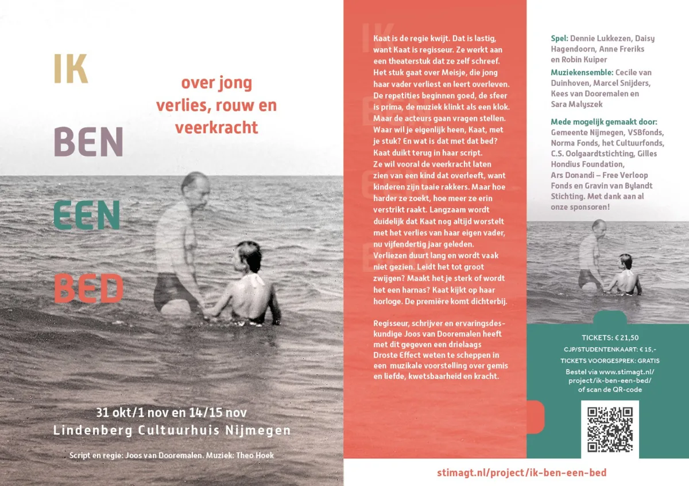
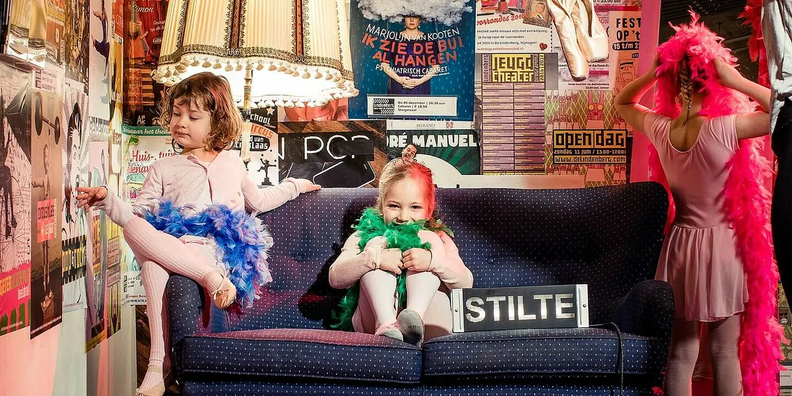
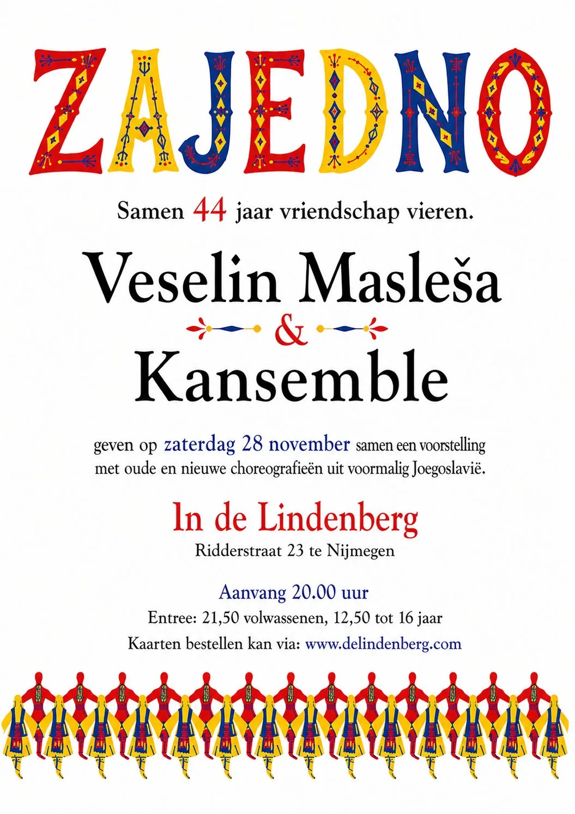
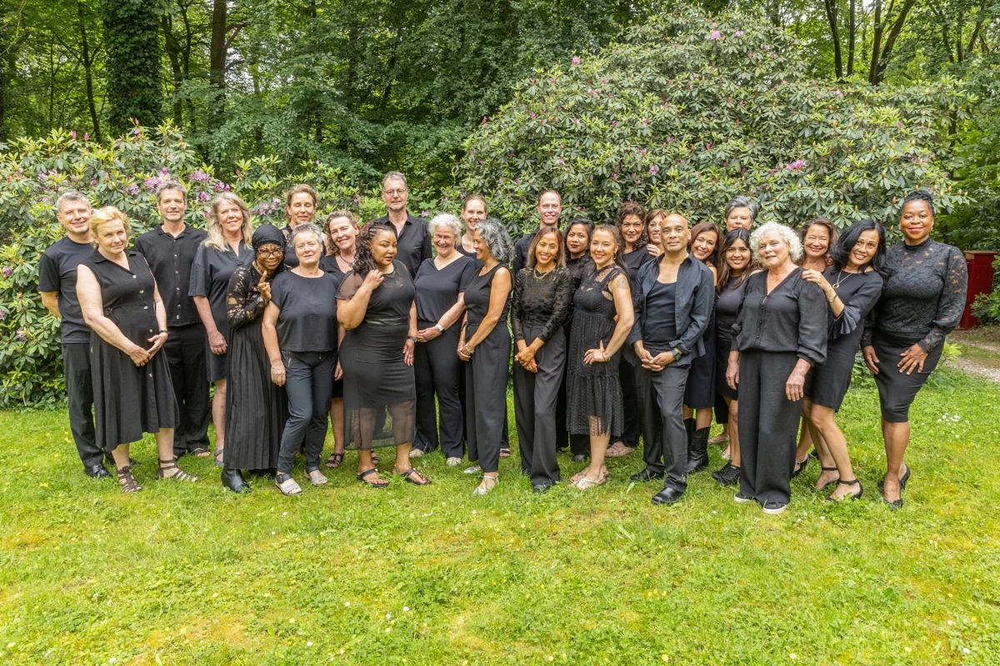
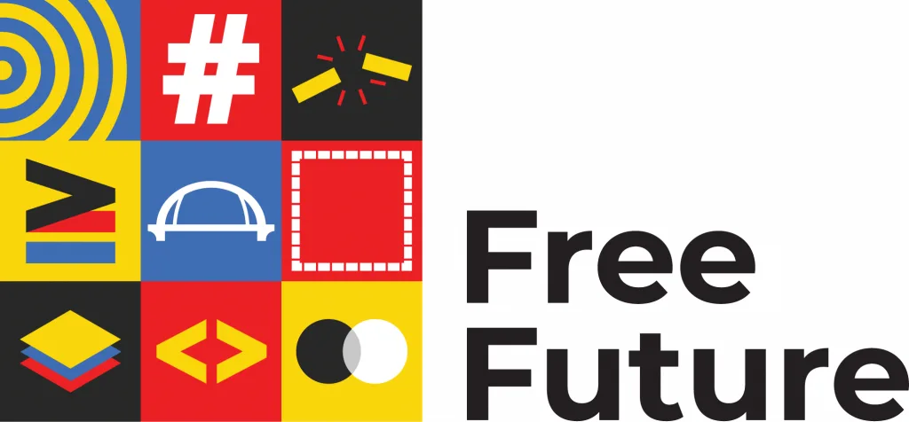
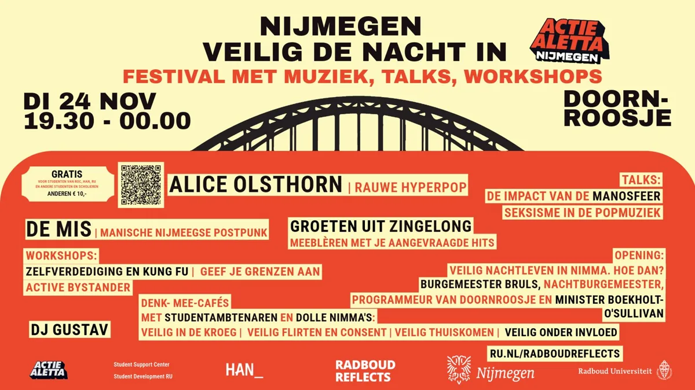
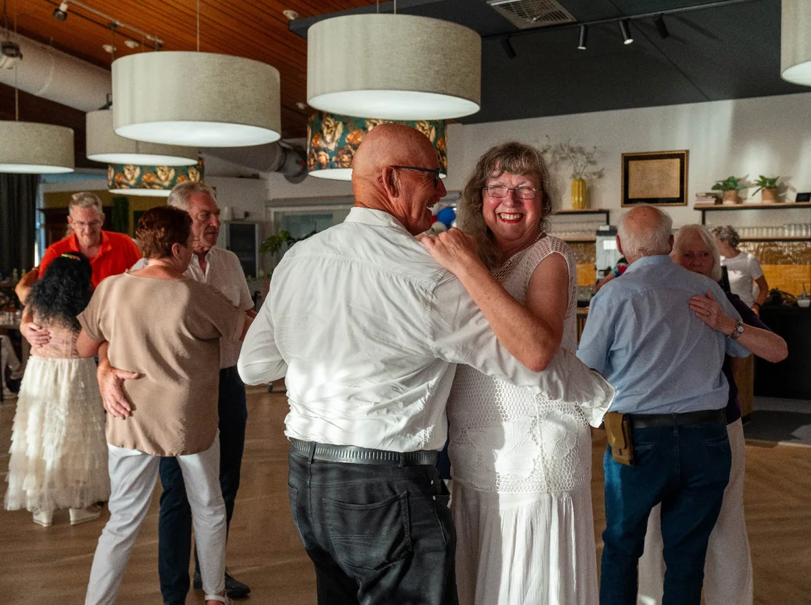
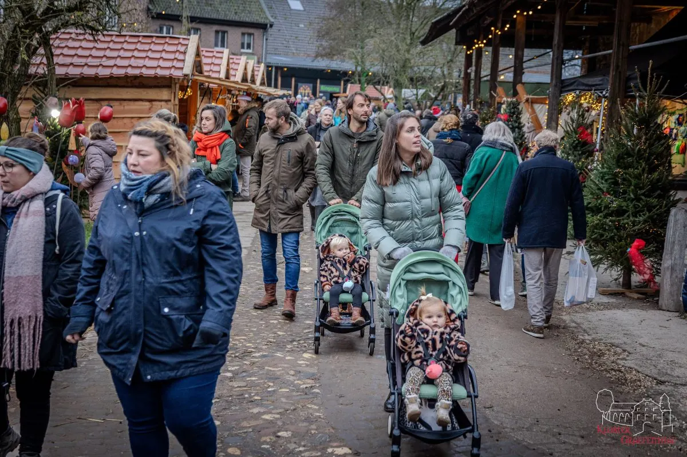

Dit evenement is afgelopen. Bekijk wat er binnenkort te doen is.
Theater en dans
Ik ben een bed
- Wanneerzaterdag 31 oktober t/m zondag 15 november 2026
- WaarLindenberg Cultuurhuis Nijmegen
Ridderstraat 23, 6511 TM Nijmegen Route - ToegangBetaald
- Contactstimagt.nl
secretariaat@stimagt.nl

Zaterdag 31 oktober is om 14.30 uur de première van de theaterproductie Ik ben een bed. De indrukwekkende tekst van het stuk is geschreven door regisseur Joos van Dooremalen en handelt over jong verlies, rouw en veerkracht, met als altijd indringende muziek van componist Theo Hoek. Na de première zijn er tot 15 november nog zes voorstellingen in Lindenberg Cultuurhuis Nijmegen. Tickets via de website.
Over Lindenberg Cultuurhuis

Lindenberg CultuurhuisOpleider · NijmegenBekijk de bedrijfspaginaMeer evenementen bij Lindenberg Cultuurhuis Nijmegen
28novInstaWalk Iconisch Nijmegen voorbij de clichés28 nov, 12.00 uur · GratisLindenberg Cultuurhuis Nijmegen
28nov

Zajedno28 nov, 20.00 uur · Vanaf € 21,50Lindenberg Cultuurhuis Nijmegen 6dec
Erwin’s Gospel6 dec, 15.00 uur · Vanaf € 15,50Lindenberg Cultuurhuis Nijmegen 7dec
Free Future College7 dec – 10 dec · Vanaf € 5Lindenberg Cultuurhuis Nijmegen, RosmalenBinnenkort in Nijmegen
24nov

Nijmegen veilig de nacht in - Actie Aletta24 nov, 17.30 uur · Vanaf € 10Doornroosje Nijmegen 24novThema-avond Amerika: post-truth politics en politiek geweld24 nov, 17.30 uur · Vanaf € 9Infocentrum WO2 Nijmegen 24nov
Swingende senioren in OBG24 nov, 19.30 uur · GratisOBG Nijmegen 27nov
Kerstmarkt Klooster Graefenthal27 nov – 6 decKloster Graefenthal Goch